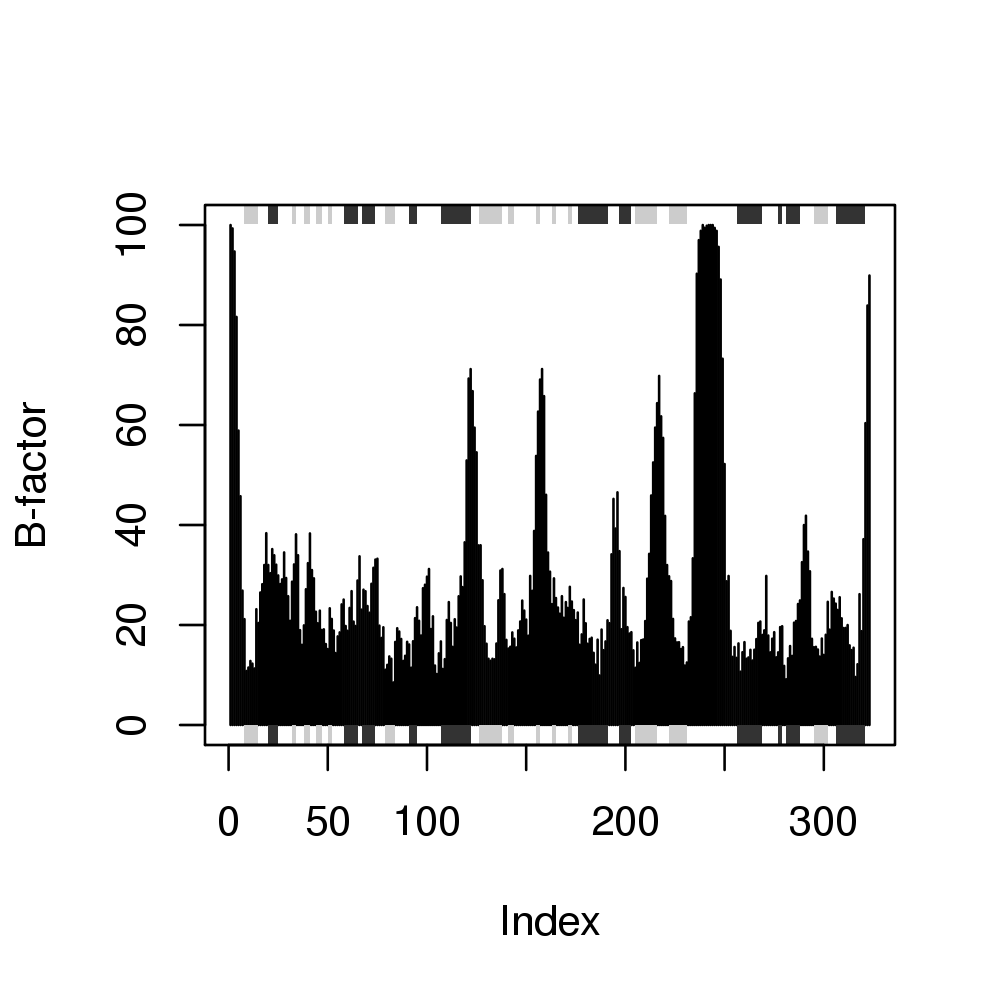
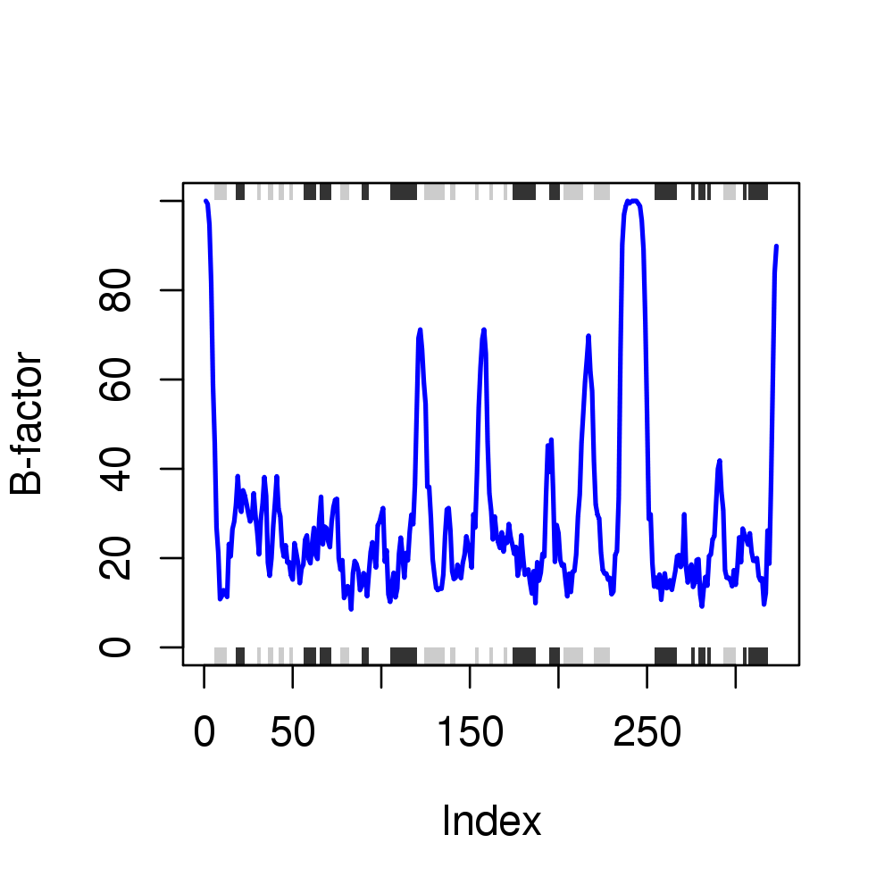

Usage
plot(x, y = NULL, type = "h", main = "", sub = "", xlim = NULL, ylim = NULL, ylim2zero = TRUE,
xlab = NULL, ylab = NULL, axes = TRUE, ann = par("ann"), col = par("col"), sse = NULL,
top = TRUE, bot = TRUE, helix.col = "gray20", sheet.col = "gray80", sse.border = FALSE,
...)
Arguments
- x
- the x coordinates for the plot. Any reasonable way of
defining the coordinates is acceptable. See the function
‘xy.coords’ for details.
- y
- the y coordinates for the plot, see above.
- type
- one-character string giving the type of plot desired. The
following values are possible, (for details, see ‘plot’): ‘p’
for points, ‘l’ for lines, ‘o’ for overplotted points and
lines, ‘b’, ‘c’) for points joined by lines,
‘s’ and ‘S’ for stair steps and ‘h’ for
histogram-like vertical lines. Finally, ‘n’ does not produce
any points or lines.
- main
- a main title for the plot, see also ‘title’.
- sub
- a sub-title for the plot.
- xlim
- the x limits (x1,x2) of the plot. Note that x1 > x2 is
allowed and leads to a reversed axis.
- ylim
- the y limits of the plot.
- ylim2zero
- logical, if TRUE the y-limits are forced to start at zero.
- xlab
- a label for the x axis, defaults to a description of ‘x’.
- ylab
- a label for the y axis, defaults to a description of ‘y’.
- axes
- a logical value indicating whether both axes should be drawn
on the plot. Use graphical parameter ‘xaxt’ or
‘yaxt’ to suppress just one of the axes.
- ann
- a logical value indicating whether the default annotation
(title and x and y axis labels) should appear on the plot.
- col
- The colors for lines and points. Multiple colours can be
specified so that each point is given its own color. If there are
fewer colors than points they are recycled in the standard fashion.
Lines are plotted in the first colour specified.
- sse
- secondary structure object as returned from
dssp or stride.
- top
- logical, if TRUE rectangles for each sse are drawn towards
the top of the plotting region.
- bot
- logical, if TRUE rectangles for each sse are drawn towards
the bottom of the plotting region.
- helix.col
- The colors for rectangles representing alpha helices.
- sheet.col
- The colors for rectangles representing beta strands.
- sse.border
- The border color for all sse rectangles.
- ...
- other graphical parameters.
Description
Draw a standard scatter plot with optional secondary structure in the
marginal regions.
Details
See the functions ‘plot.default’, dssp and stride
for further details.
Value
Called for its effect.
References
Grant, B.J. et al. (2006) Bioinformatics 22, 2695--2696.
Note
Be sure to check the correspondence of your ‘sse’ object with the
‘x’ values being plotted as no internal checks are performed.
Examples
## Plot of B-factor values along with secondary structure from PDB
pdb <- read.pdb( "1bg2" )
Note: Accessing online PDB file
HEADER MOTOR PROTEIN 04-JUN-98 1BG2
plot.bio3d(pdb$atom[pdb$calpha,"b"], sse=pdb, ylab="B-factor")

## Calculate secondary structure
#sse <- stride(pdb, resno=FALSE)
sse <- dssp(pdb, resno=FALSE)
## Plot of B-factor values along with calculated secondary structure
plot.bio3d(pdb$atom[pdb$calpha,"b"], sse=sse, ylab="B-factor", typ="l",
col="blue", lwd=2)
